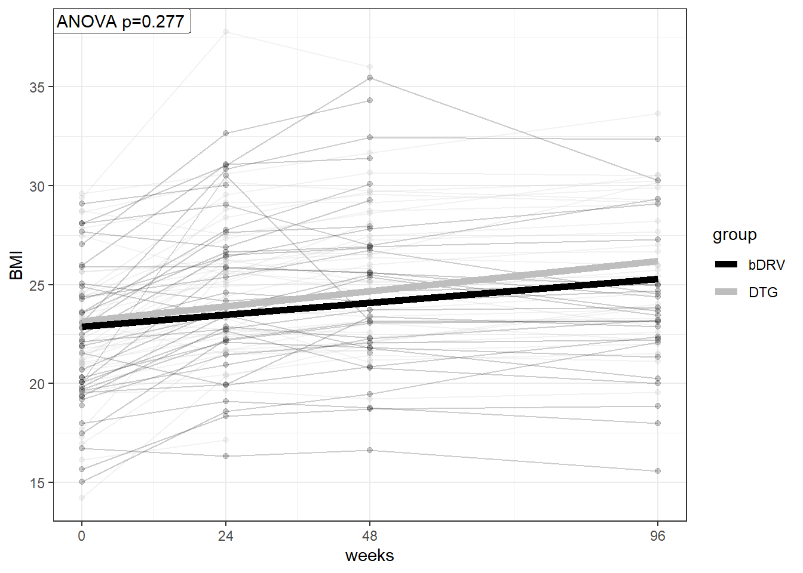
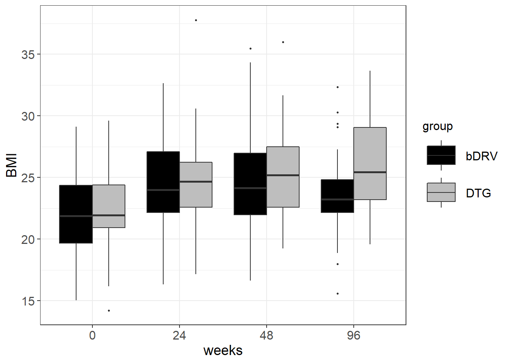
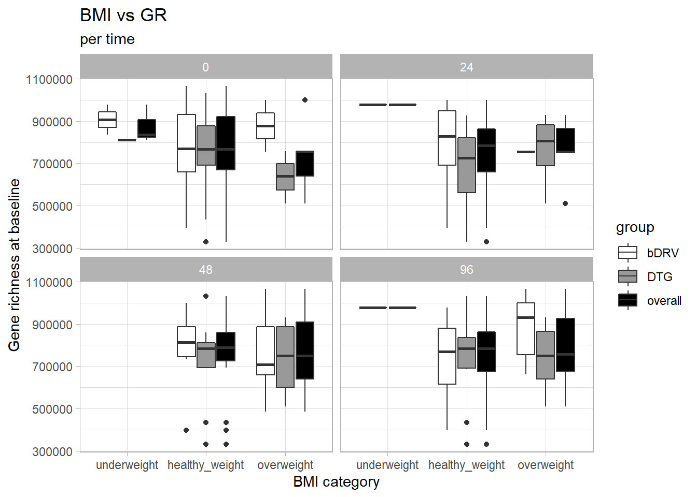

BMI_stratification
Carlos Blázquez Bondia
2023-03-06
Last updated: 2023-05-30
Checks: 6 1
Knit directory: advanz4/
This reproducible R Markdown analysis was created with workflowr (version 1.7.0). The Checks tab describes the reproducibility checks that were applied when the results were created. The Past versions tab lists the development history.
The R Markdown file has unstaged changes. To know which version of
the R Markdown file created these results, you’ll want to first commit
it to the Git repo. If you’re still working on the analysis, you can
ignore this warning. When you’re finished, you can run
wflow_publish to commit the R Markdown file and build the
HTML.
Great job! The global environment was empty. Objects defined in the global environment can affect the analysis in your R Markdown file in unknown ways. For reproduciblity it’s best to always run the code in an empty environment.
The command set.seed(20211203) was run prior to running
the code in the R Markdown file. Setting a seed ensures that any results
that rely on randomness, e.g. subsampling or permutations, are
reproducible.
Great job! Recording the operating system, R version, and package versions is critical for reproducibility.
Nice! There were no cached chunks for this analysis, so you can be confident that you successfully produced the results during this run.
Great job! Using relative paths to the files within your workflowr project makes it easier to run your code on other machines.
Great! You are using Git for version control. Tracking code development and connecting the code version to the results is critical for reproducibility.
The results in this page were generated with repository version 8132dd0. See the Past versions tab to see a history of the changes made to the R Markdown and HTML files.
Note that you need to be careful to ensure that all relevant files for
the analysis have been committed to Git prior to generating the results
(you can use wflow_publish or
wflow_git_commit). workflowr only checks the R Markdown
file, but you know if there are other scripts or data files that it
depends on. Below is the status of the Git repository when the results
were generated:
Ignored files:
Ignored: .RData
Ignored: .Rhistory
Ignored: .Rproj.user/
Ignored: analysis/.Rhistory
Ignored: analysis/010_Basic_Report_cache/
Ignored: analysis/250_BL_stratification.knit.md
Ignored: analysis/420_Taxonomy_DA_cache/
Ignored: analysis/510_Function_DA_cache/
Ignored: analysis/mre/
Ignored: data/mre.rds
Untracked files:
Untracked: output/figures/GR0_BMI_Boxplots.svg
Untracked: output/figures/bmi_alluvial.svg
Unstaged changes:
Modified: analysis/311_GR_vs_BMI.Rmd
Deleted: analysis/figure/320_Beta_Diversity.Rmd/silhouette_analysis-1.png
Deleted: analysis/figure/320_Beta_Diversity.Rmd/unnamed-chunk-1-1.png
Deleted: analysis/figure/320_Beta_Diversity.Rmd/unnamed-chunk-2-1.png
Note that any generated files, e.g. HTML, png, CSS, etc., are not included in this status report because it is ok for generated content to have uncommitted changes.
These are the previous versions of the repository in which changes were
made to the R Markdown (analysis/311_GR_vs_BMI.Rmd) and
HTML (docs/311_GR_vs_BMI.html) files. If you’ve configured
a remote Git repository (see ?wflow_git_remote), click on
the hyperlinks in the table below to view the files as they were in that
past version.
| File | Version | Author | Date | Message |
|---|---|---|---|---|
| Rmd | 8132dd0 | cblazquez-irsi | 2023-05-30 | updated BMI script |
| Rmd | ca750c9 | cblazquez | 2023-05-26 | Added NMDS centroid distance analysis |
| html | ca750c9 | cblazquez | 2023-05-26 | Added NMDS centroid distance analysis |
| Rmd | 85710c1 | cblazquez | 2023-05-10 | Minor changes to BMIvGR script |
| html | 85710c1 | cblazquez | 2023-05-10 | Minor changes to BMIvGR script |
| Rmd | 669d6f7 | cblazquez | 2023-05-05 | first try at fixing spaghetti plot at BMI vs GR |
| Rmd | c13ab30 | cblazquez | 2023-05-04 | changes to alluvial and tests in BMI test |
| Rmd | 209eb6d | cblazquez | 2023-04-28 | Added all info for BMI and updated alluvial plot |
| Rmd | 47cd70d | cblazquez-irsi | 2023-04-26 | First fixes to BMI analysis |
| html | 47cd70d | cblazquez-irsi | 2023-04-26 | First fixes to BMI analysis |
| Rmd | 4db2a47 | cblazquez | 2023-04-19 | added spaghetti plot to BMI rmd |
| html | 4db2a47 | cblazquez | 2023-04-19 | added spaghetti plot to BMI rmd |
| html | 72f1533 | cblazquez | 2023-04-18 | Updated website |
| html | 0aef819 | cblazquez-irsi | 2023-04-13 | fixed bug on GR_inflammation |
| Rmd | efdac31 | cblazquez-irsi | 2023-04-13 | Reestructured website |
| html | efdac31 | cblazquez-irsi | 2023-04-13 | Reestructured website |
| Rmd | 62208cc | cblazquez | 2023-03-22 | text changes on BMI vs GR |
| html | 62208cc | cblazquez | 2023-03-22 | text changes on BMI vs GR |
| Rmd | ec0749d | cblazquez | 2023-03-13 | Added BMI tests for week 24 |
| html | ec0749d | cblazquez | 2023-03-13 | Added BMI tests for week 24 |
| Rmd | 1b0ddcb | cblazquez | 2023-03-13 | Added richness vs stratification by BMI_group |
| html | 1b0ddcb | cblazquez | 2023-03-13 | Added richness vs stratification by BMI_group |
| Rmd | 1393493 | cblazquez | 2023-03-10 | started stratifcation by BMI |
| html | 1393493 | cblazquez | 2023-03-10 | started stratifcation by BMI |
| Rmd | 40fda18 | cblazquez | 2023-03-10 | Readded delta BMI vs GR |
| html | 40fda18 | cblazquez | 2023-03-10 | Readded delta BMI vs GR |
| Rmd | cbd814a | cblazquez | 2023-03-09 | added distribution per group |
| html | cbd814a | cblazquez | 2023-03-09 | added distribution per group |
| Rmd | ec3949c | cblazquez | 2023-03-08 | updated BMI_vs_GR |
| html | ec3949c | cblazquez | 2023-03-08 | updated BMI_vs_GR |
| Rmd | e1710d2 | cblazquez-irsi | 2023-03-07 | started analysis n GR vs BMI |
suggested package selbal vsuggested package DataExplorer vsuggested package lme4 vsuggested package merTools vStratification by BMI
This set of tests comes from recent studies which found that INSTIs are associated with greater BMI increases, respective to other treatments in ART-receiving patients. BMI is highly related to gut health, metabolism and microbiome, and may be a possible confussor regarding the interaction between treatment and microbiote, especially gene richness, as it may be masking the actual effect of treatment. The first is to assess how big of an impact our treatments have on the patients BMIs.
As we are looking strictly at BMI now, we’ll use the entries for ALL participants included in the study, regardless of wether there are faecal samples in a certain timepoint or not.
[1] "group"
[1] "BMI"
| long_var | group1 | group2 | groups | p | p.adj.signif |
|---|---|---|---|---|---|
| 0 | bDRV | DTG | bDRV, DTG | 0.4270 | ns |
| 24 | bDRV | DTG | bDRV, DTG | 0.9720 | ns |
| 48 | bDRV | DTG | bDRV, DTG | 0.4280 | ns |
| 96 | bDRV | DTG | bDRV, DTG | 0.0329 | ns |
| cat_var | group1 | group2 | p | p.adj.signif |
|---|---|---|---|---|
| bDRV | 0 | 24 | 4.70e-06 | **** |
| bDRV | 0 | 48 | 0.00e+00 | **** |
| bDRV | 0 | 96 | 1.71e-04 | *** |
| bDRV | 24 | 48 | 1.31e-02 | * |
| bDRV | 24 | 96 | 3.28e-01 | ns |
| bDRV | 48 | 96 | 4.37e-01 | ns |
| DTG | 0 | 24 | 4.60e-06 | **** |
| DTG | 0 | 48 | 0.00e+00 | **** |
| DTG | 0 | 96 | 2.20e-06 | **** |
| DTG | 24 | 48 | 6.40e-03 | ** |
| DTG | 24 | 96 | 1.15e-03 | ** |
| DTG | 48 | 96 | 3.86e-03 | ** |
Turns out looking at BMI alone, no categorical differences can be found. While both treatment groups significantly increase in BMI, no diferences between DTG an DRV are found.
Anyhow, this may have something to do with BMI differences at BL. Let’s check for its distribution:

It seems there is a certain bimodality in the distribution of BMI at BL in the DTG, in which a peak of patients emerges around BMI of 28. Anyway, both groups have their peaks farily close to the overall median, and their distributions, especially in the bDRV group approaches normality. The overall median is 22.064, which is well within the healthy weight.
- 18.5 (Underweight)
- 18.5 to 25 (healthy weight).
- 25 (overweight)
The total number of patients in each group at basal is as follows
| bDRV | DTG | p.overall | |
|---|---|---|---|
| N=42 | N=44 | ||
| group_bmi: | 1.000 | ||
| underweight | 5 (11.9%) | 5 (11.4%) | |
| healthy weight | 29 (69.0%) | 31 (70.5%) | |
| overweight | 8 (19.0%) | 8 (18.2%) |
As we can see, the majority of the cohort is within the range of healthy weight and both groups are pretty well balanced at baseline. This sets a good statistical base from which to find signals after treatment.
Longitudinal evolution of BMI
Before entering in the complexities of gut microbiota, we’ll assess wether DTG/bDRV have a differential effect on the chances of patients changing BMI categories. A good way to visualize this will be an alluvial plot.
There is an increase in overweight incidence in both groups, but it is more noticeable in the DTG group. In the bDRV it appears the BMI increase is more temporary, as many patients who become overweight after treatment initiation, return to a healthy weight after 96 weeks. This is not the case in the DTG group, however, where all the participants who become overweight remain so during the whole study.
The population of underweight seems to improve more in the DTG, as none of the participants fall into this category as soon as week 48, while sme patients remain so along the whole study in the bDRV arm.
GR Stratification by BMI at baseline
Now it is time to assess whether the BMI category may be affecting/be influenced by gene richness. The First thing we should look is whether baseline richness is influencing the bmi of our cohort
GR vs BMI correlation at baseline
Now we found a threshold appropiate to split by BMI, we can stratify the population by treatment and bmi, vs gene richness.
No correlation could be found between BMI and GR at baseline in either group nor overall. However, the microbiota may still influence later BMI changes, or even just BMI at later times. Now we’ll correlate GRBL to BMI at different timepoints:
# A tibble: 12 x 4
group time_point cor p
<chr> <int> <dbl> <dbl>
1 bDRV 0 -0.059 0.739
2 bDRV 24 0.29 0.257
3 bDRV 48 -0.16 0.406
4 bDRV 96 0.36 0.108
5 DTG 0 0.049 0.784
6 DTG 24 0.098 0.635
7 DTG 48 0.1 0.564
8 DTG 96 -0.27 0.149
9 overall 0 -0.0077 0.95
10 overall 24 0.19 0.227
11 overall 48 -0.02 0.879
12 overall 96 0.11 0.437Also, we can see there is a patient with a REALLY low gene count, although it passed the 2nd percentile filtering. Patient E006 at month 0 received trteatment for a latent syphlis infection, just a week before collecting the sample. This means he received a penicilin injection hammered its microbiota to oblivion, and may be wise to discard it.
But, does baseline richness influence the the distribution of BMI groups at a specific timepoint? This could shed some light as why we didn’t find any correlation, as the effect of baseline richness may only manifest very late or very early and dilute afterwards. the best way to look at this is via boxlots:

No differences between treatment group or bmi group could be observed in what regards to their respective GR at baseline in any timepoint. This suggests gene richness may not have an overall big impact on the BMI, regardless of group.
Stratification by BMI changes
Maybe the increase in gene richness may be associated not so much to absolute BMI but of changes in BMI. In this part we’ll correlate richness to changes in BMI over time.
Baseline richness vs BMI changes
The first hypotesis to test is whether differences in richness may be affecting BMI changes after treatment.
Again, nothing. No correlation between richness at basal and change of BMI at any timepoint could be found.
BMI vs GR change
We already look on the effect of gene richness at baseline, but now the next question would be whether the chages in richness we reported before are linked to BMI changes as well.

Both treatment groups appear to have a unimodal distribution regarding their BMI increase at week 96, both in absolute and relative terms. However there seems to be a shift between both, as the “valley” between both peaks in the DTG group seems to be shifted toward the left, relative to the DRV group.

No significant differences in trends could be observed either. Interesting to note, in the absolute plot there are 2 apparent outliers. Those took antibiotics at some point of the study and it reflected in a significant loss of gene richness, but in absolute numbers they aren’t really low on richness, it’s just the change.
Now let’s categorize these results:
A we can see, no differences between groups in GR increase could be fond for any of the BMI groups. While it seems there is some in the Overweight group at week 24, it is not significant due to the low n present in the group (n = 1 in the case of bDRV Overweight). Remember the actual Ns won’t necessarily match the alluvial plot’s as the GR analysis are constricted only to those with present faecal samples.
sessionInfo()R version 4.0.2 (2020-06-22)
Platform: x86_64-w64-mingw32/x64 (64-bit)
Running under: Windows 10 x64 (build 22621)
Matrix products: default
locale:
[1] LC_COLLATE=Spanish_Spain.1252 LC_CTYPE=Spanish_Spain.1252
[3] LC_MONETARY=Spanish_Spain.1252 LC_NUMERIC=C
[5] LC_TIME=Spanish_Spain.1252
attached base packages:
[1] stats graphics grDevices utils datasets methods base
other attached packages:
[1] rstatix_0.7.1 metar_0.1.5 ggpubr_0.4.0 RColorBrewer_1.1-3
[5] ggalluvial_0.12.3 forcats_0.5.2 stringr_1.4.0 dplyr_1.0.8
[9] purrr_0.3.4 readr_2.0.1 tidyr_1.2.0 tibble_3.1.6
[13] ggplot2_3.3.5 tidyverse_1.3.1
loaded via a namespace (and not attached):
[1] uuid_1.1-0 readxl_1.3.1 backports_1.4.1
[4] blme_1.0-5 workflowr_1.7.0 systemfonts_1.0.4
[7] plyr_1.8.8 igraph_1.2.9 splines_4.0.2
[10] listenv_0.9.0 digest_0.6.29 foreach_1.5.2
[13] htmltools_0.5.2 lmerTest_3.1-3 fansi_1.0.3
[16] Rsolnp_1.16 magrittr_2.0.3 cluster_2.1.0
[19] tzdb_0.3.0 globals_0.16.2 Biostrings_2.58.0
[22] modelr_0.1.8 officer_0.4.4 svglite_2.1.0
[25] colorspace_2.0-3 rvest_1.0.1 textshaping_0.3.6
[28] haven_2.3.1 xfun_0.30 crayon_1.5.2
[31] jsonlite_1.8.0 lme4_1.1-29 survival_3.1-12
[34] iterators_1.0.14 ape_5.6-2 glue_1.6.2
[37] kableExtra_1.3.4 gtable_0.3.1 zlibbioc_1.36.0
[40] XVector_0.30.0 webshot_0.5.2 phyloseq_1.34.0
[43] car_3.1-1 Rhdf5lib_1.12.1 BiocGenerics_0.36.1
[46] abind_1.4-5 scales_1.2.1 mvtnorm_1.1-3
[49] DBI_1.1.3 Rcpp_1.0.8.3 viridisLite_0.4.1
[52] xtable_1.8-4 merTools_0.5.2 stats4_4.0.2
[55] truncnorm_1.0-8 htmlwidgets_1.5.4 httr_1.4.4
[58] ellipsis_0.3.2 mice_3.13.0 farver_2.1.1
[61] DataExplorer_0.8.2 pkgconfig_2.0.3 dbplyr_2.1.1
[64] utf8_1.2.2 here_1.0.1 labeling_0.4.2
[67] tidyselect_1.1.2 rlang_1.0.2 reshape2_1.4.4
[70] later_1.3.0 munsell_0.5.0 cellranger_1.1.0
[73] tools_4.0.2 cli_3.2.0 generics_0.1.3
[76] selbal_0.1.0 ade4_1.7-20 broom_1.0.2
[79] evaluate_0.19 biomformat_1.18.0 fastmap_1.1.0
[82] ragg_1.2.4 arm_1.12-2 yaml_2.3.6
[85] knitr_1.38 fs_1.5.2 compareGroups_4.5.1
[88] zip_2.2.2 future_1.30.0 nlme_3.1-148
[91] whisker_0.4.1 mime_0.12 xml2_1.3.2
[94] compiler_4.0.2 rstudioapi_0.13 ggsignif_0.6.4
[97] reprex_2.0.1 HardyWeinberg_1.7.2 stringi_1.7.6
[100] highr_0.10 gdtools_0.2.4 logger_0.2.2
[103] lattice_0.20-41 Matrix_1.5-3 nloptr_2.0.0
[106] vegan_2.6-4 permute_0.9-7 multtest_2.46.0
[109] vctrs_0.4.1 pillar_1.8.1 lifecycle_1.0.1
[112] networkD3_0.4 rhdf5filters_1.2.1 furrr_0.3.1
[115] jquerylib_0.1.4 cowplot_1.1.1 flextable_0.6.8
[118] data.table_1.14.6 httpuv_1.6.7 R6_2.5.1
[121] promises_1.2.0.1 gridExtra_2.3 writexl_1.4.1
[124] IRanges_2.24.1 parallelly_1.33.0 codetools_0.2-16
[127] boot_1.3-25 MASS_7.3-51.6 assertthat_0.2.1
[130] chron_2.3-58 rhdf5_2.34.0 rprojroot_2.0.3
[133] withr_2.5.0 S4Vectors_0.28.1 broom.mixed_0.2.9.4
[136] mgcv_1.8-31 parallel_4.0.2 hms_1.1.2
[139] grid_4.0.2 coda_0.19-4 minqa_1.2.5
[142] rmarkdown_2.19 carData_3.0-5 git2r_0.30.1
[145] base64enc_0.1-3 numDeriv_2016.8-1.1 Biobase_2.50.0
[148] shiny_1.7.1 lubridate_1.8.0